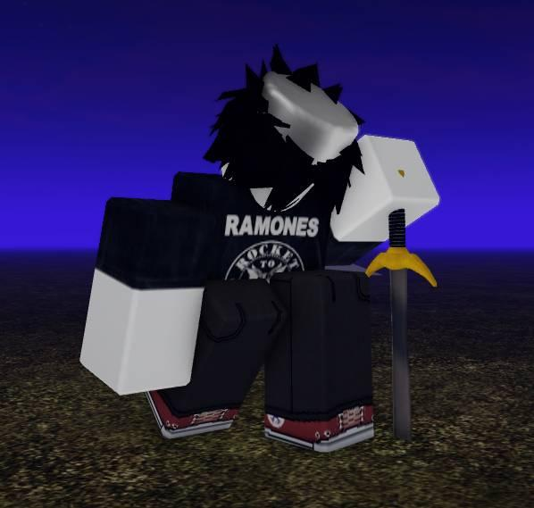

OBJECT: ER_44
КЛАСС: MAIN
СТАТУС: NORMAL
Системное сообщение от скрытого процесса: ЛОГ_ПОВРЕЖДЕН_K0_X7
ВВЕДИТЕ ДЕКОДИРОВАННЫЙ КЛЮЧ С ДИСКОРД-СЕРВЕРА:
Внимание. Обнаружен профиль игрока. Восстановление стабильности системы невозможно без внешнего ключа доступа.

КЛАСС: MAIN
СТАТУС: NORMAL
Системное сообщение от скрытого процесса: ЛОГ_ПОВРЕЖДЕН_K0_X7
ВВЕДИТЕ ДЕКОДИРОВАННЫЙ КЛЮЧ С ДИСКОРД-СЕРВЕРА: